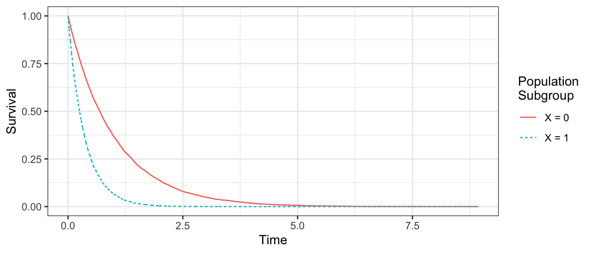

beta_0 <- 0
beta_1 <- 1
simulated <- tibble(id = 1:1e4) |>
mutate(
x = rbinom(n(), 1, .5),
lambda = exp(beta_0 + beta_1 * x),
# Simulate from the Exponential for this illustration:
# can be any hazard function
t = rexp(n(), rate = lambda),
c = 0
)Cox Proportional Hazards
The Cox proportional hazards model is a very popular approach to survival analysis which researchers use when they do not want to make assumptions about the shape of the baseline hazard. To understand the Cox model, recall that all proportional hazards models take the form below.
\[ h(t\mid\vec{X}) = \underbrace{\lambda(t)}_{\substack{\text{baseline}\\\text{hazard}}}\underbrace{e^{\vec{X}'\vec\beta}}_{\substack{\text{hazard}\\\text{ratio}}} \]
In the Exponential model, the baseline hazard is \(\lambda(t) = \lambda = \exp(\vec{X}'\vec\beta)\). In the Weibull model, the baseline hazard has a more complicated form that is a function of time \(t\).
The Cox proportional hazards model makes no assumptions about \(\lambda(t)\). The insight of this model is to write the likelihood in a way that the baseline hazard \(\lambda(t)\) drops out so that we can learn the hazard ratios without learning the baseline hazard.
Below we introduce the Cox model in math and then in code, before discussing its drawbacks.
In math
The Cox model says: consider a time \(t\) at which some unit in the sample dies. What is the probability that it would be unit \(i\) (who is alive up to \(t\)), as opposed to some other unit (who is also alive up to \(t\))? This probability equals the ratio of the hazard for unit \(i\) to the sum of the hazards for all units at risk at time \(t\).
\[ \text{P}(\text{Unit }i\text{ dies at }t\mid \text{Some unit dies at }t) = \frac{h(t\mid \vec{X} = \vec{x}_i)}{\sum_{j:t_j\geq t} h(t\mid \vec{X} = \vec{x}_j)} \]
Recall that in a proportional hazards model, the hazard equals the baseline hazard \(\lambda(t)\) and the hazard ratio \(\exp(\vec{x}'\vec\beta)\). If we plug these in for \(h()\), the baseline hazard \(\lambda(t)\) appears in the numerator and denominator and cancels.
\[ \text{P}(\text{Unit }i\text{ dies at }t\mid \text{Some unit dies at }t) = \frac{\exp(\vec{x}_i'\vec\beta)}{\sum_{j:t_j\geq t} \exp(\vec{x}_j'\vec\beta)} \]
Multiplying over all time points when a unit dies, this produces a likelihood that is a function of \(\vec\beta\) and not a function of the baseline hazard \(\lambda(t)\). By maximizing this likelihood, we can learn the coefficients \(\vec\beta\) predicting the log hazard (and thus the hazard ratios) without making any assumptions about the baseline hazard.
In code
To practice the Cox model in code, first simulate some data. Here we simulate a binary \(X\sim\text{Bernoulli}(0.5)\) and define a rate parameter \(\lambda = \exp(\beta_0 + \beta_1 X)\) for \(\beta_0 = 0\) and \(\beta_1 = 1\). Then, we simulate Exponential draws from \(T\sim \text{Exponential}(\lambda)\). For illustration, no one is censored (c = 0).
Next, we fit a Cox proportional hazards model.
model <- coxph(
Surv(t, event = 1 - c) ~ x,
data = simulated
)Extracting the coefficients of this model, we have a coefficient on the predictor \(x\).
coef(model) x
1.001093 This approximately equals the true value of $_1 = $1 in this simulation, and it captures the additive change in the log hazard when moving from x = 0 to x = 1.
Exponentiating the coefficients, we get the hazard ratio \(e^{\beta_1}\) for a shift from x = 0 to x = 1.
exp(coef(model)) x
2.721254 Drawbacks of the Cox model
The Cox model is popular because it does not require assumptions about the baseline hazard. But it comes with a major drawback: one generally cannot simulate any quantities of interest beyond the hazard ratios with a Cox model.
For example, suppose we wanted to know the survival probability at time \(t\). This would require us to translate our model parameters to a survival function. But because the Cox model parameters are uninformative about the baseline hazard \(\lambda(t)\), they are by extension uninformative about the survival function.
Overcoming drawbacks
One way around this problem is to nonparametrically estimate the baseline survival function, and then to update it using the hazard ratios. Let the survival function at \(t\) for subgroup \(\vec{X} = \vec{x}\) be denoted \(S(t,\vec{x})\). Let the baseline survival function be \(S(t,\vec{0})\). With math that we do not show here, one can derive that the survival function at \(\vec{x}\) equals the basline survival function raised to the power of the hazard ratio.
\[S(t,\vec{x}) = S(t,\vec{0})^{\exp(\vec{x}'\vec\beta)}\]
One can therefore estimate \(S(t,\vec{x})\) with two inputs
- A nonparametric estimate of \(S(t,\vec{0})\) from Kaplan-Meier
- Cox estimates of \(\vec\beta\) for the hazard ratio
Below, we illustrate this on the simulated data. First, we define the baseline subgroup with \(X = 0\).
baseline_subgroup <- simulated |> filter(x == 0)Then we estimate the baseline survival by Kaplan-Meier on this subgroup.
baseline_kaplanmeier <- survfit(
Surv(t, event = 1 - c) ~ 1,
data = baseline_subgroup
)Third, we extract the nonparametric estimate of the baseline survival function among the \(X = 0\).
baseline_survival <- tibble(
t = baseline_kaplanmeier$time,
# Extract baseline survival among X = 0
S0 = baseline_kaplanmeier$surv
)To produce an estimate among the \(X = 1\) subgroup, we first need the hazard ratio from the Cox model.
hazard_ratio <- exp(coef(model))Finally, we can create the survival curve among \(X = 1\) by taking the baseline survival curve and raising it to the power of the hazard ratio.
both_survival <- baseline_survival |>
mutate(S1 = S0 ^ hazard_ratio)Below we visualize these two estimated curves.
Code
both_survival |>
pivot_longer(cols = -t, names_to = "X", values_to = "S") |>
mutate(X = str_replace(X,"S","X = ")) |>
ggplot(aes(x = t, y = S, color = X, linetype = X)) +
geom_line() +
labs(
x = "Time",
y = "Survival",
color = "Population\nSubgroup",
linetype = "Population\nSubgroup"
)
Thus, it is possible to combine Cox estimates with a nonparametric baseline survival estimate to produce survival curves.
Rare circumstances
The combination of Kaplan-Meier + Cox is a creative one, but it applies only in a very rare setting (3) and is less useful in more common settings (1 and 2).
1. Common setting: All \(\vec{x}\)-values are well-populated. If \(\vec{X}\) takes on only a few discrete values that are well-populated, you can directly use Kaplan-Meier to nonparametrically estimate the survival curves in each subgroup. There is no need to use a Cox model: you can avoid the proportional hazards assumption entirely. An example of this setting is a randomized experiment with a binary treatment.
2. Common setting: No \(\vec{x}\)-value is well populated. If \(\vec{X}\) takes many values such that there is no value \(\vec{x}\) that has many observation, then there is no baseline subgroup with enough cases to estimate a baseline Kaplan-Meier curve. In this setting, you cannot estimate the baseline hazard nonparametrically. You have two choies: (1) estimate a Cox model and only get hazard ratios or (2) assume a parametric distribution (e.g., Weibull) and gain the ability to simulate any quantity of interest.
3. Rare setting: One well-populated baseline \(\vec{x}\)-value. Suppose a randomized experiment occurs where many people are assigned a control condition (\(x = 0\)) and others are distributed over many number-valued treatment conditions (\(x > 0\)). In this setting, many cases are available to estimate the baseline hazard by Kaplan-Meier among \(x = 0\). Kaplan-Meier is less useful for any \(x>0\) because very few cases are seen at any particular \(x\)-value. But a Cox model can impose structure on this space and learn hazard ratios, thereby allowing the baseline hazard (learned on \(x = 0\)) to be updated for the other \(x\)-values.
In practice, researchers often default to Cox. But for setting (1) Kaplan-Meier would be better. For setting (2) fully parametric models (e.g., Weibull or Exponential) may be better because they allow simulation of any quantity of interest, at the small cost of assuming a family for the baseline hazard. Setting (3) is an ideal setting for the Cox model, but may correspond to very few actual research situations.